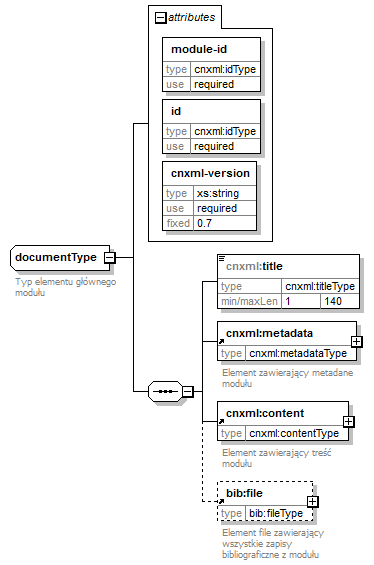

| diagram |
 |
| namespace |
http://cnx.rice.edu/cnxml |
| children |
cnxml:title cnxml:metadata cnxml:content bib:file |
| used by |
|
| attributes |
|
| annotation |
| documentation | | Typ elementu głównego modułu |
|
| source |
<xs:complexType name="documentType">
<xs:annotation>
<xs:documentation>Typ elementu głównego modułu</xs:documentation>
</xs:annotation>
<xs:sequence>
<!--<xs:element ref="cnxml:title"/>-->
<xs:element name="title" type="cnxml:titleType"/>
<xs:element ref="cnxml:metadata"/>
<xs:element ref="cnxml:content"/>
<xs:element ref="bib:file" minOccurs="0"/>
</xs:sequence>
<xs:attribute name="module-id" type="cnxml:idType" use="required"/>
<xs:attribute name="id" type="cnxml:idType" use="required"/>
<xs:attribute name="cnxml-version" type="xs:string" use="required" fixed="0.7"/>
</xs:complexType> |